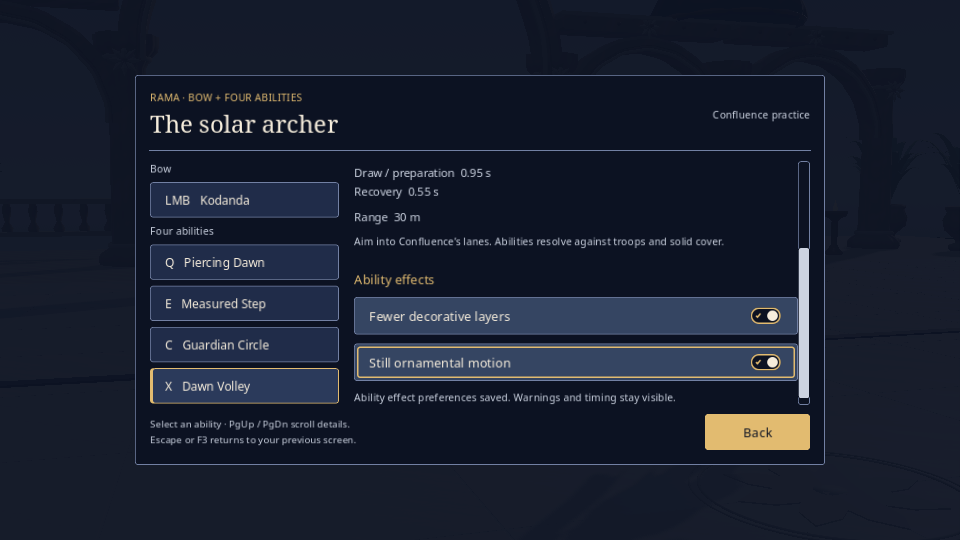
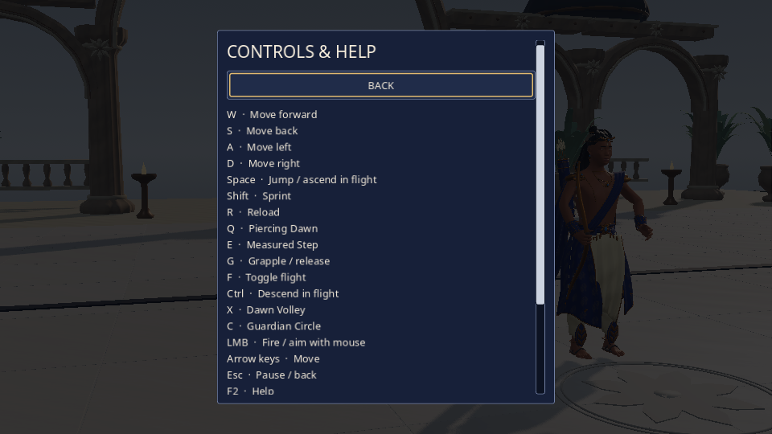
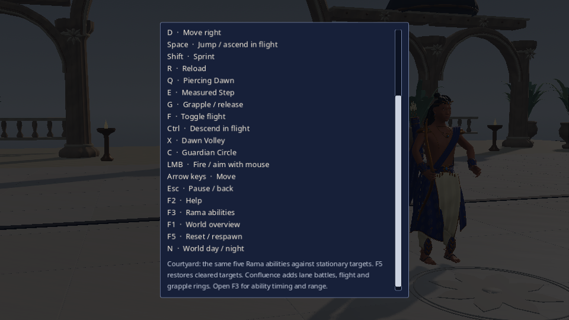
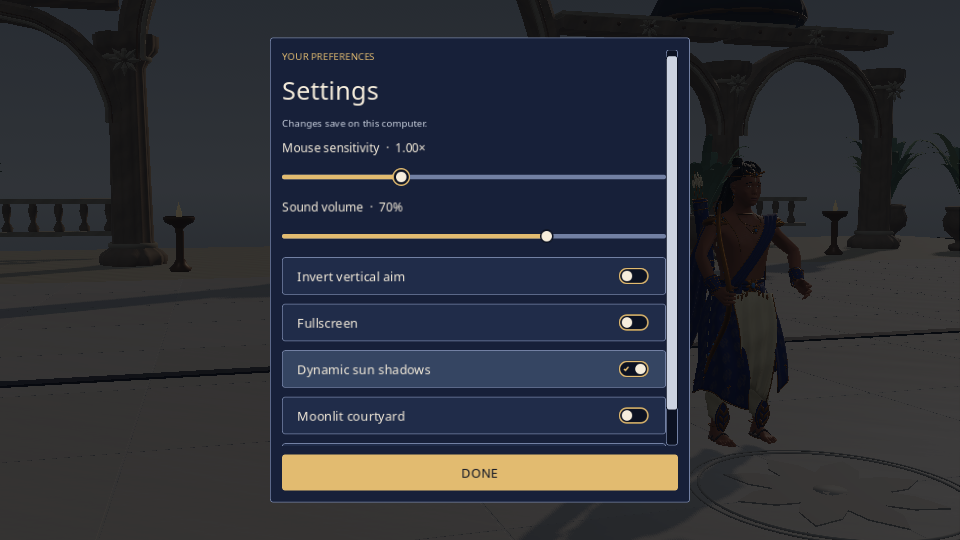
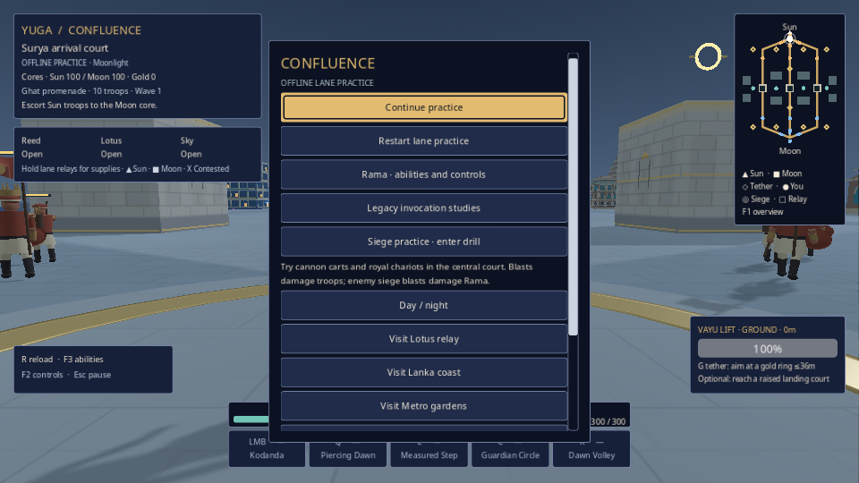
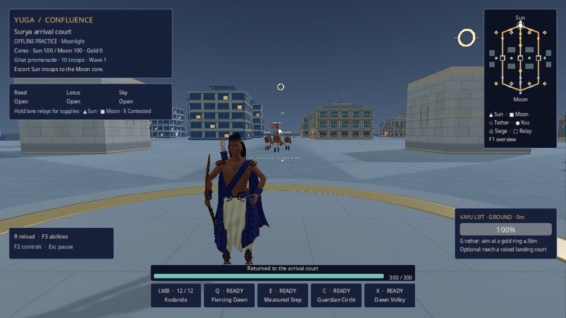
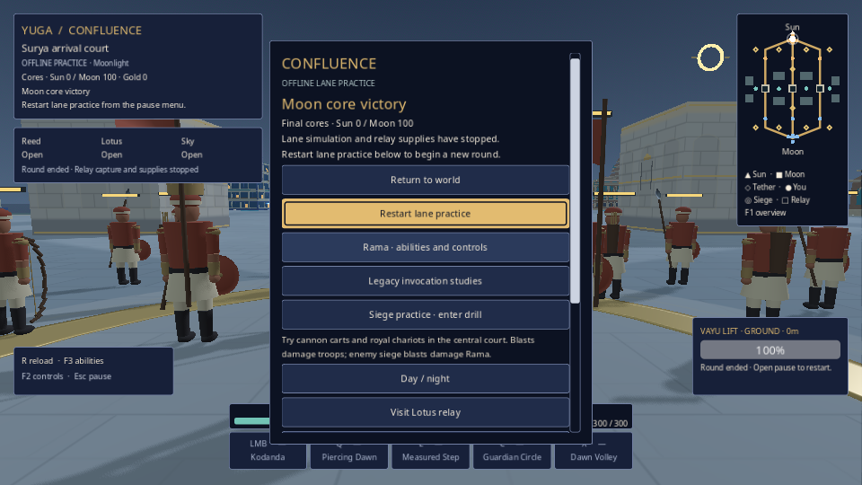
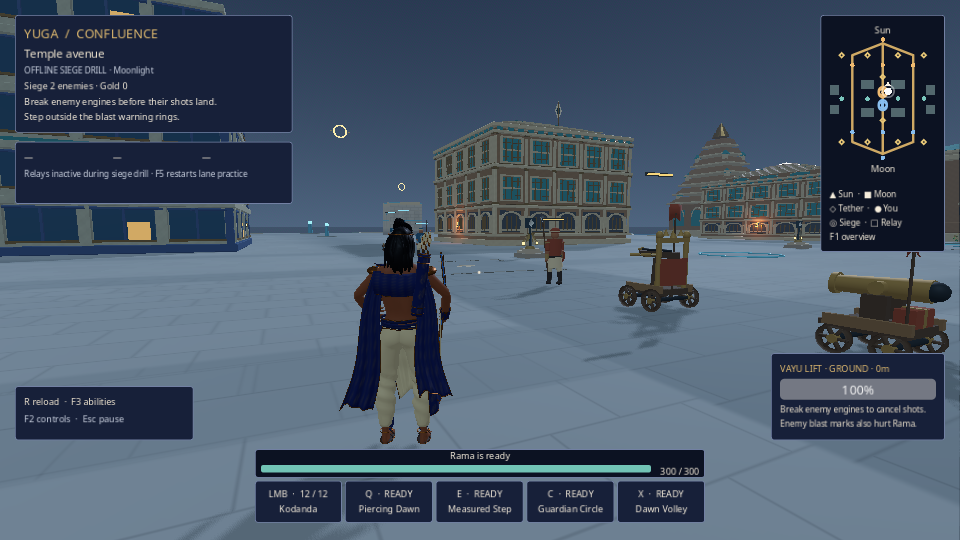
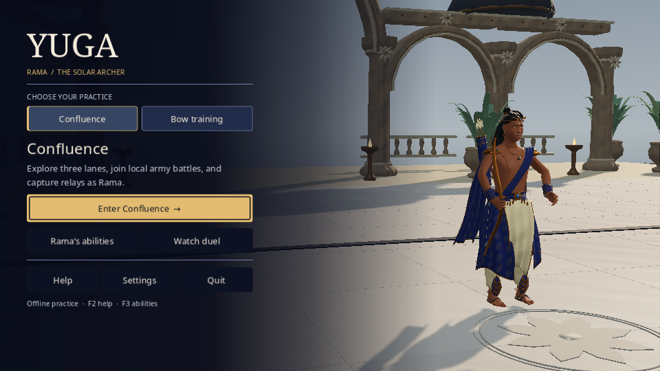
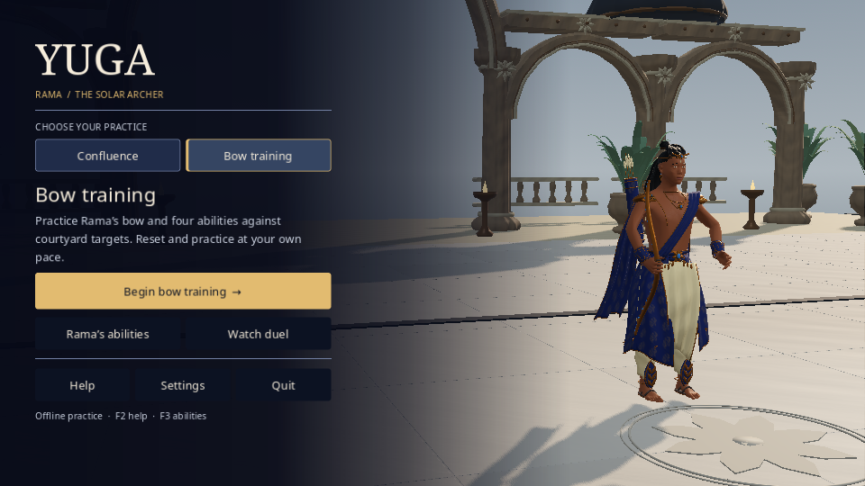

integrated-r2
Untouched framebuffer originals. Native window 960×600; integrated framebuffer 960×540. Read each JSON for actual phase, state and fixture scope.
01-repaired-source-title.png · stateNative navigation / observed loading phase.
02-guide-save-status-visible.png · stateNative navigation / observed loading phase.
03-help-fresh-header.png · stateNative navigation / observed loading phase.
04-help-native-scroll.png · stateNative navigation / observed loading phase.
05-help-reopened-header.png · stateNative navigation / observed loading phase.
06-settings-fixed-done.png · stateNative navigation / observed loading phase.
07-night-world-pause.png · stateNative navigation / observed loading phase.
08-STAGED-respawn-atlas-corrected.png · stateSTAGED AUTHORITY / simulation hold: respawn
09-STAGED-sun-outcome-atlas-corrected.png · stateSTAGED AUTHORITY / simulation hold: outcome-sun
10-STAGED-moon-outcome-atlas-corrected.png · stateSTAGED AUTHORITY / simulation hold: outcome-moon
11-STAGED-draw-outcome-atlas-corrected.png · stateSTAGED AUTHORITY / simulation hold: outcome-draw
12-siege-enemy-count-corrected.png · stateNative navigation / observed loading phase.
13-repaired-source-return-title.png · stateNative navigation / observed loading phase.
14-training-before-duel.png · stateNative navigation / observed loading phase.
15-training-selection-after-duel.png · stateNative navigation / observed loading phase.
auto-constructing-1.png · stateNative navigation / observed loading phase. auto-constructing-2.png · stateNative navigation / observed loading phase.
auto-constructing-3.png · stateNative navigation / observed loading phase.
auto-constructing-4.png · stateNative navigation / observed loading phase.
auto-constructing-5.png · stateNative navigation / observed loading phase.
auto-loading-1.png · stateNative navigation / observed loading phase.
auto-constructing-2.png · stateNative navigation / observed loading phase.
auto-constructing-3.png · stateNative navigation / observed loading phase.
auto-constructing-4.png · stateNative navigation / observed loading phase.
auto-constructing-5.png · stateNative navigation / observed loading phase.
auto-loading-1.png · stateNative navigation / observed loading phase. auto-loading-2.png · stateNative navigation / observed loading phase.
auto-loading-3.png · stateNative navigation / observed loading phase.
auto-loading-2.png · stateNative navigation / observed loading phase.
auto-loading-3.png · stateNative navigation / observed loading phase. auto-loading-4.png · stateNative navigation / observed loading phase.
auto-loading-4.png · stateNative navigation / observed loading phase. auto-loading-5.png · stateNative navigation / observed loading phase.
auto-queued-1.png · stateNative navigation / observed loading phase.
auto-loading-5.png · stateNative navigation / observed loading phase.
auto-queued-1.png · stateNative navigation / observed loading phase. auto-queued-2.png · stateNative navigation / observed loading phase.
auto-queued-3.png · stateNative navigation / observed loading phase.
auto-queued-4.png · stateNative navigation / observed loading phase.
auto-queued-5.png · stateNative navigation / observed loading phase.
auto-queued-2.png · stateNative navigation / observed loading phase.
auto-queued-3.png · stateNative navigation / observed loading phase.
auto-queued-4.png · stateNative navigation / observed loading phase.
auto-queued-5.png · stateNative navigation / observed loading phase.